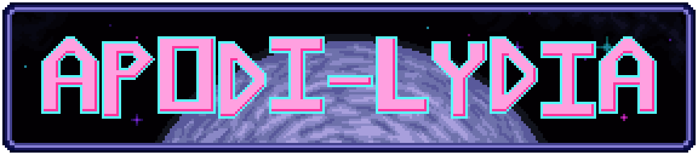

Lydia is a hummingbird like any other. One that can, of course, shoot lasers and breathe in space. She hears of a mysterious planet and wants to visit it. So she sets off, but has to defend herself along the way. In this shoot-em-up game, you guide Lydia through space while dodging bullets, defeating eneimes and minimizing how many deaths you take throughout. The better you do, the higher your score will be at the end. Can you reach the planet with no deaths?
This game was originally created for the "QGDC Game Jam Winter 2025" where it won third place overall, winning first place in Graphics, Music and Stability categories. I later returned to this project to add more to the game, leading it to become my second fully original high quality project. All the programming, art and music in game are all my original work.
Want to play this game for yourself? Check it out on my itch.io page!
Going into this project and into the game jam this game was created for, I knew that I had wanted to try and create a bullet hell game despite what theme got chosen. I had recently revisited my other project Chisom, and was inspired to have another crack at creating another original bullet hell game, only this time in a much more simplified setting. Once the time of the game jam came around, the theme chosen was 'Chaos', which I figured would fit well enough into the type of game I was planning to make. However, seeing that the theme was Chaos, I decided to have some fun with developing the project in a chaotic way as well.
While originally creating this project during the game jam I made it for, although I had the general type of game I wanted to create in mind, I had no setting for the game in mind at all. So I decided to simply create what popped up in my head when it came to creating the art. Immediately as the jam started, I thought that a hummingbird being the player could be cool, so I created one. After this, I thought it would be funny to have them turn into a fried chicken upon death, so I created a death animation of this fairly quickly. Was this potentially a bad way of creating the art for the game? Maybe, but I had a lot of fun creating the game this way, and the resulting setting turned out to be pretty chaotic and distinct.
During the jam as I created the project, the main goals I had with the project shifted. Since I had already won the 'Queens Game Jam 2024' the year prior, I wasn't as focused on trying to win overall. So I instead focused on winning in the categories I wanted to win in the most, those being in Graphics and Music. Due to this, most of my time creating this project during the jam was dedicated to creating the art and music. This did affect my final scores in other categories, such as Theme, Fun/Game Feel, and especially Originality, but in the end I won in the categories I wanted to win in. I even excelled in the Graphics and Stability categories, almost receiving perfect scores in each category, and receiving heavy praise for the art from other people in the jam.
The game jam version of this game only featured the boss fight with much more difficult bullet patterns than anything found in the current version of the game. I made the bullet patterns difficult to incentivize players to replay the fight again and again to potentially get better at the fight and minimize their total deaths throughout. However later on I returned to the game and updated it to feature a full stage, including updated backgrounds, enemies to shoot, a mini-boss fight and a reworked boss fight to have much easier patterns compared to the game jam patterns. I also added in different difficulties and achievements to incentivize replayability with only the one stage.